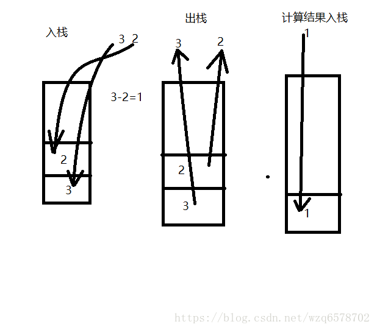

jvm原理（31）栈帧与操作数栈剖析及符号引用与直接引用的转换
修改一下上一节的程序：
1 | public class MyTest3 { |
我们在test方法上加了throws，throws了三个异常，然后我们在打开jclasslib，会发现多了一个Exceptions的项：
里边的内容就是我们throws的三个异常，这个和异常表是不同的2个概念，异常表会更复杂一点在字节码当中。
0 cp_info #11 java/io/FileNotFoundException
1 cp_info #12 java/io/IOException
2 cp_info #34 java/lang/NullPointerException
slot
在java虚拟机中，每一个线程都对应一个栈帧，所以说这个是线程安全的，对于栈帧来说；对于栈帧我们举例说明：
现在要进行3-2=1这样一个运算,首先会把3和2压入栈，然后遇到操作符减号的时候，需要将3和2弹出栈，然后进行计算3-2=1，得到结果1，然后将结果1压入栈；

途中在栈中的每一个方格就是一个栈帧，一个栈帧就是一个slot，一个栈帧的大小是依据数据类型来定义的，比如int类型的是3为bit，需要一个栈帧，而long类型的是64个bit，需要2个slot，加载long类型的时候需要加载2个slot，slot可以被复用，举例：
1 | public class MyTest4 { |
这段代码有5个局部变量，a,b,c,d,e，其中c和b的作用域是在if里边，if执行完毕他们就会被虚拟机垃圾回收器回收，但是他们在局部变量表里边是不会体现出他们各自的生命周期的，当c和b被回收之后，他们占用的slot可能会被d和e复用，slot就好比一个坑,这个坑你蹲完了，我可以接着用这个肯去蹲。也可能不会去复用，不同虚拟机实现是不同的。
符号引用怎么转换为直接引用：
有些符号引用在加载或者第一次使用的时候就会转换为直接引用，这种成为静态的解析；另外一些符号引用则是在每次运行期转换为直接引用，这种转换为动态链接，这体现为java的多态性。
1 | Animal a = new Cat(); |
在字节码的角度来看a指向的是Animal 的sleep()，不是Cat，不是Dog，也不是Tiger，挡在运行期间，invokevirtual指令会检查a实际指向的对象，然后将a的sleep的调用转换为实际指向对相关的sleep的调用。这里每次调用都会调用invokevirtual指令，